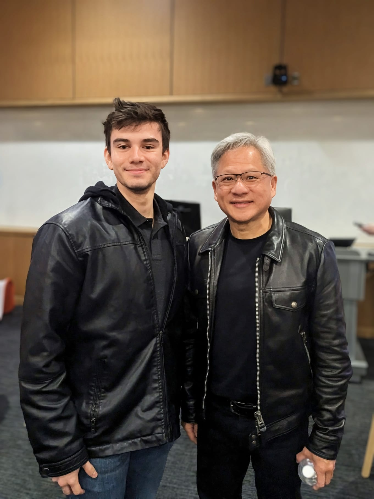

Education
University of Florida — Ph.D., Electrical & Computer Engineering (expected 2030)
University of Florida — B.S., Electrical & Computer Engineering (2020–2025)
Doral Academy Charter School — STEM diploma (2013–2020)

I am a University of Florida Ph.D. student in Electrical and Computer Engineering working in Gainesville, Florida across signal processing, time-series machine learning, neuroengineering, and research software. My goal is to build mathematically grounded systems that stay useful when they meet real biological data, real hardware, and real deployment constraints.
The work that matters most to me sits at the intersection of signals and systems, controls, machine learning, and neurotechnology. I care about models that remain interpretable under noise, limited data, and practical hardware limits instead of only looking good in idealized benchmarks.
University of Florida — Ph.D., Electrical & Computer Engineering (expected 2030)
University of Florida — B.S., Electrical & Computer Engineering (2020–2025)
Doral Academy Charter School — STEM diploma (2013–2020)
My current work is connected to UF ECE, the Computational NeuroEngineering Lab, and IEEE Signal Processing Society activities at UF.
I favor problems where modeling assumptions, signal quality, and system design all interact. In practice that means thinking about the data collection stack, the mathematics, and the evaluation pipeline together rather than pretending they are separate tasks.
That mindset carries into teaching and community work too. If a concept cannot survive being explained clearly, tested, and reused by someone else, the pipeline is probably not rigorous enough yet.
Photography, music, and training matter to me for the same reason research does: they reward discipline, iteration, and attention to detail.